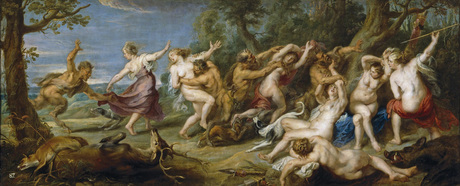

a mitologia dos povos da Grécia, os sátiros são considerados divindades menores da natureza. Eles possuem o aspecto físico de homens, porém com pernas, cauda e orelhas de bode ou cabrito.
Os sátiros, que são sempre figuras masculinas, também possuem chifres nas testas, os narizes achatados, barbas longas e lábios grossos.
Para eles, normalmente, era oferecido o pinho e a oliveira e, mesmo sendo seres divinos, eles não eram imortais.
Esses seres viviam nos bosques e nos campos e, frequentemente se relacionavam com as ninfas. As relações mais comuns eram com as Mênades, que se juntavam com eles para realizar o cortejo de Dionísio.
Além de Dionísio, que era o deus do vinho, os sátiros também acompanhavam Pã, que era o protetor dos pastores, dos bosques, dos rebanhos e campos.
Outra grande curiosidade sobre os sátiros na mitologia grega, é que eram seres de grande potência sexual.Justamente por isso eram retratados, muitas vezes, apresentando uma ereção.
Segundo algumas tradições gregas, Sileno era considerado o pai das tribos de sátiros. O pai dos sátiros era um inegável consumidor de vinho. Suas representações eram feitas quase sempre com sua figura visivelmente bêbada, amparada pelos sátiros ou então sendo carregado por burros. Vale lembrar que Sileno faz parte do mito importante que envolve o Rei Midas. Nesse mito, Sileno é encontrado bêbado pelos servos do rei e é levado a ele para que seja cuidado. O Rei Midas cuida de Sileno até que se recupere e depois o leva até Dionísio, seu filho, ou pupilo. Dionísio, muito agradecido, oferece ao Rei a realização de um desejo e este escolhe o toque de ouro. Sendo assim, Sileno tem um papel fundamental no mito do Rei que transformava em ouro tudo aquilo que tocava.

Marsias também foi um sátiro muito importante na mitologia grega, além de Sileno.
Segundo as lendas e mitos, essa figura mitológica foi a que desafiou Apolo em um concurso musical.
Marsias era um excelente tocador de flauta e tocava um instrumento que havia sido feito por Atena. Nesse concurso, segundo a decisão das juízas, que eram as musas, quem saiu vencedor foi Apolo.
Como punição ao perdedor, Apolo pregou o sátiro em uma árvore e o sangue que escorreu do seu corpo deu origem ao rio chamado Marsias.
Nos dramas satíricos, os sátiros eram figuras imprescindíveis, obviamente. Esses dramas eram peças leves, apresentadas nos teatros gregos de uma forma cômica como um complemento e alívio para uma trilogia trágica que era feita em homenagem a Babo.
Nessa tragédia, o mais interessante de tudo, é que os personagens atuam de forma séria, porém, seus atos são satirizados por comentários obscenos e irrelevantes feitos pelos sátiros que os acompanham.